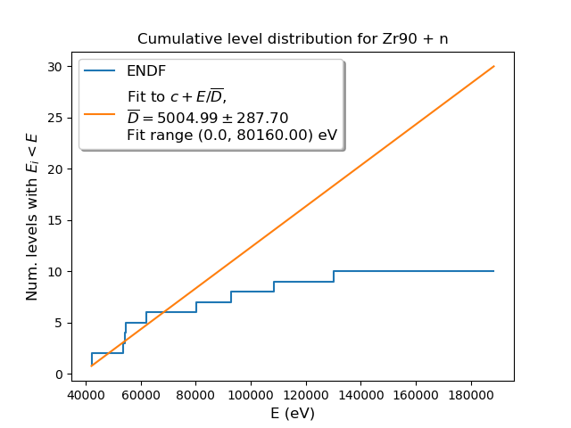
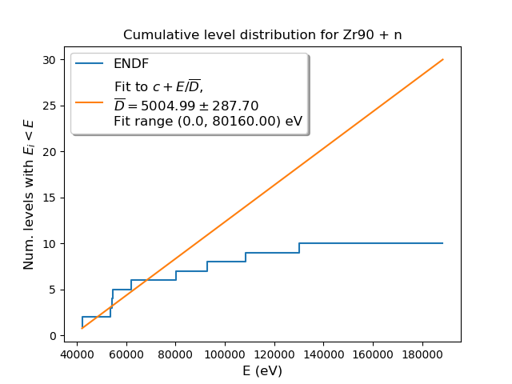

| No. resonances | No. resonances w/ ER<0 | gfact | Threshold E (eV) | Eliminated? | Competative? | Relativistic? | Pot. scatt. only? | RRR <D> (eV) | RRR <Gamma> (eV) |
|---|
| elastic (j=0.5,l=0,s=0.5) | 25 | 0 | 1.0 | 0.0 | False | False | False | False | 8.1e3 +/- 6.0e3 eV | 128. +/- 1.2e2 eV |
| capture (j=0.5,l=0,s=0.5) | 25 | 0 | 1.0 | 0.0 | False | False | False | False | 8.1e3 +/- 6.0e3 eV | 0.16 +/- 0.12 eV |
| elastic (j=1.5,l=1,s=0.5) | 44 | 0 | 2.0 | 0.0 | False | False | False | False | 4.4e3 +/- 4.3e3 eV | 105. +/- 1.6e2 eV |
| capture (j=1.5,l=1,s=0.5) | 44 | 0 | 2.0 | 0.0 | False | False | False | False | 4.4e3 +/- 4.3e3 eV | 0.36 +/- 0.28 eV |
| elastic (j=0.5,l=1,s=0.5) | 23 | 0 | 1.0 | 0.0 | False | False | False | False | 8.2e3 +/- 9.5e3 eV | 86. +/- 2.2e2 eV |
| capture (j=0.5,l=1,s=0.5) | 23 | 0 | 1.0 | 0.0 | False | False | False | False | 8.2e3 +/- 9.5e3 eV | 0.21 +/- 0.10 eV |
| elastic (j=1.5,l=2,s=0.5) | 10 | 0 | 2.0 | 0.0 | False | False | False | False | 1.6e4 +/- 1.6e4 eV | 0.49 +/- 0.58 eV |
| capture (j=1.5,l=2,s=0.5) | 10 | 0 | 2.0 | 0.0 | False | False | False | False | 1.6e4 +/- 1.6e4 eV | 0.112 +/- 0.067 eV |
| elastic (j=2.5,l=2,s=0.5) | 11 | 0 | 3.0 | 0.0 | False | False | False | False | 8.4e3 +/- 5.5e3 eV | 8. +/- 20. eV |
| capture (j=2.5,l=2,s=0.5) | 11 | 0 | 3.0 | 0.0 | False | False | False | False | 8.4e3 +/- 5.5e3 eV | 0.076 +/- 0.091 eV |

 
